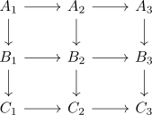

3 times 3 lemma for fibers
Proposition
Let $\mathcal{C}$ be a finitely complete pointed category and

a diagram, where
- all three rows are fiber sequences
- $A_2 \rightarrow B_2 \rightarrow C_2, A_3 \rightarrow B_3 \rightarrow C_3$ are fiber sequences.
Then so is $A_1 \rightarrow B_1 \rightarrow C_1$.
Proof
dual to 3 times 3 lemma for cofibers